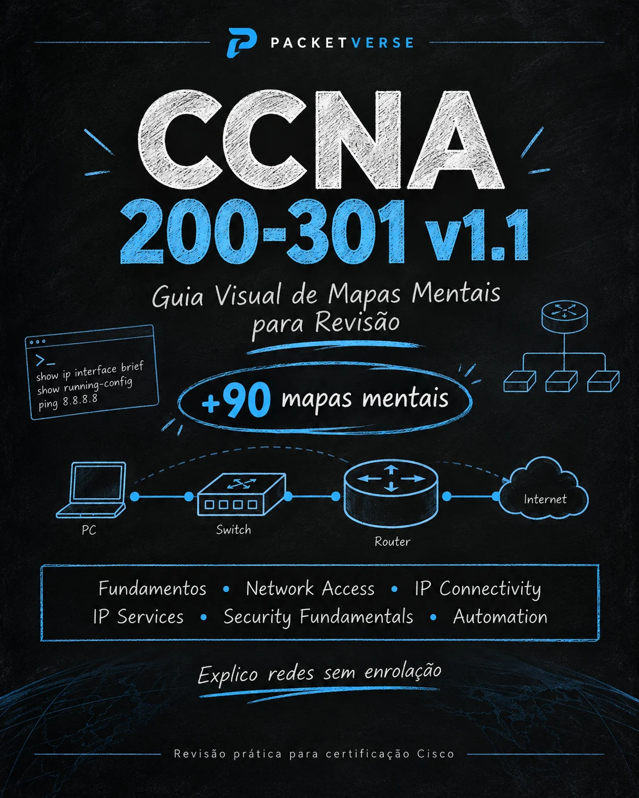

Network Fundamentals
Componentes, modelos, IPv4/IPv6, cabeamento, wireless e fundamentos.
Mapas mentais e guias visuais para construir base, revisar os tópicos da certificação e conectar teoria à prática.

Estrutura visual para acelerar compreensão e revisão.
Componentes, modelos, IPv4/IPv6, cabeamento, wireless e fundamentos.
VLANs, trunks, EtherChannel, STP e arquiteturas de acesso.
Tabela de roteamento, rotas estáticas e OSPF.
NAT, DHCP, DNS, NTP, QoS e serviços essenciais.
Ameaças, controles, AAA, ACLs e segurança de acesso.
APIs, controller-based networking, JSON e automação.
O material foi pensado para reduzir o tempo perdido procurando conceitos espalhados. Cada mapa combina estrutura visual, comandos, exemplos e pontos de verificação.